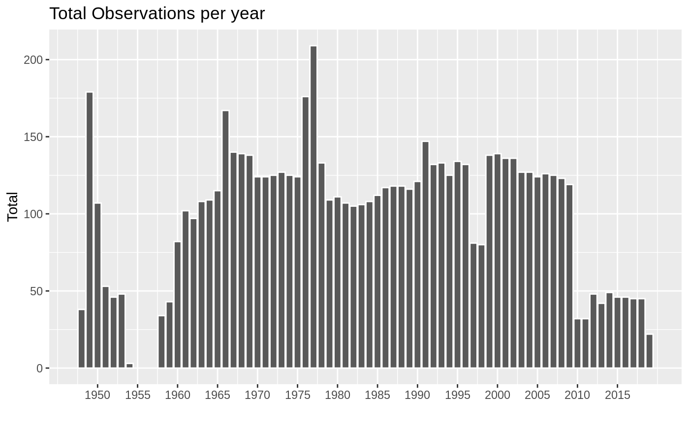
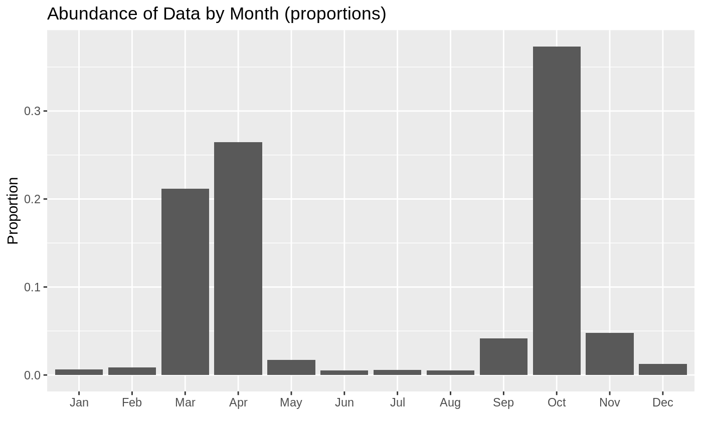
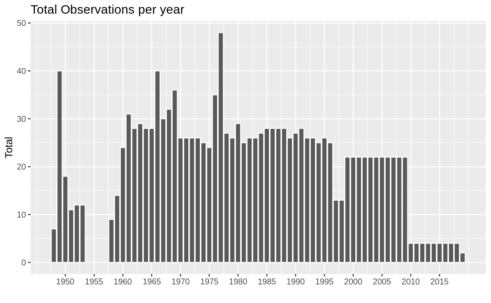
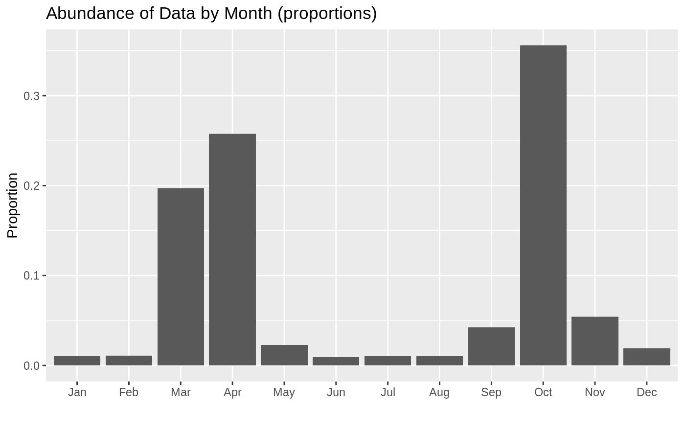

groundwater-sites.RmdThis short article describes the groundwater site codes for the Adobe Creek Groundwater Project.
The data used is a result from making a query for all groundwater sites within the the Big Valley Subasin on the CASGEM data portal.
In total there are 85 sites in the Big Valley basin. The earliest recorded data is from June 02, 1948, and the most recent recording is from March 28, 2019. The most abundant years of data are:

Measurements of groundwater elevations is done twice a year, once in the Spring and once in the Fall. However Spring and Fall are not a consitent month. The plot below shows how the data observations are distributed across the months. I present the data as proportions (for example October accounts for over 30% of all the data we have).

For this project we are interested in sites along the creek. The image below shows these sites.
sites-along-adobe
Here are the identified sites from CASGEM that are near the Adobe Creek.
In total there are 16 sites in the Big Valley basin. The earliest recorded data is from October 28, 1948, and the most recent recording is from March 26, 2019. The most abundant years of data are:

Measurements of groundwater elevations is done twice a year, once in the Spring and once in the Fall. However Spring and Fall are not a consitent month. The plot below shows how the data observations are distributed across the months. I present the data as proportions (for example October accounts for over 30% of all the data we have).
